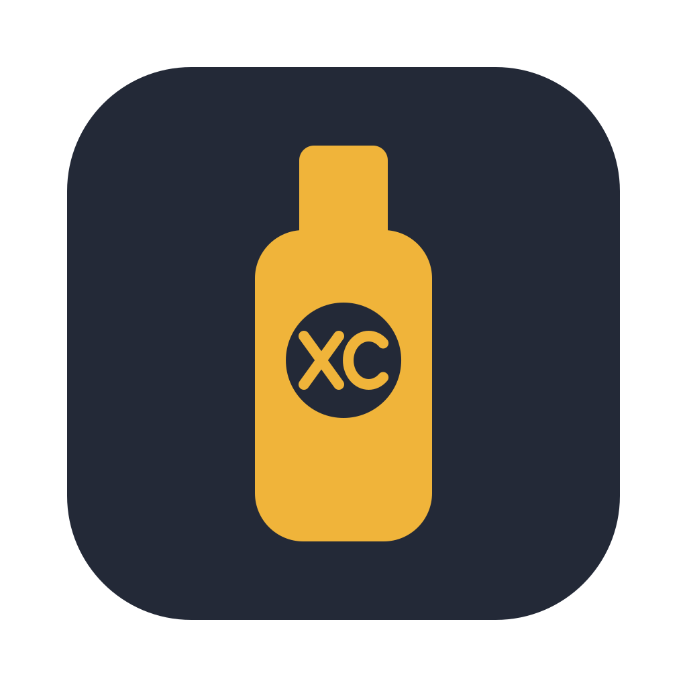

fido2kpxc
Unlock KeePassXC on macOS with a FIDO2 security key.
fido2kpxc is a small menu-bar app. It keeps your KeePassXC database passwords in a vault that only your security keys can open, and fills in the password when KeePassXC asks for it.
How it works
- KeePassXC shows its unlock screen. fido2kpxc asks for your key's PIN.
- Your key blinks. Touch it.
- fido2kpxc fills in the database password and presses Unlock.
Details
- Works with any FIDO2 key that supports hmac-secret and has a PIN, for example YubiKey, Token2, or Google Titan.
- Enroll a backup key of any brand. With several keys plugged in, touch the one to use.
- Stores one password per database file, plus an optional catch-all.
- Never uses the clipboard, unless you turn on "Copy Password".
- Fills in the password only after it checks KeePassXC's code signature.
- Sync the vault folder with any tool to use it on another Mac.
- A single binary under 1 MiB, written in Rust. Apache-2.0.
Install
You need macOS 13 or later on a Mac with Apple silicon, and KeePassXC 2.7 or later. Download the .dmg or .pkg from the latest release. The app is self-signed, so the first time, right-click it and choose Open. Then choose "Set Up…" in its menu.
Verify a download
GitHub Actions builds every release from its tag and signs SLSA Build Level 3 provenance for it:
gh attestation verify fido2kpxc-<version>.dmg --repo BJMCox/fido2kpxc \
--signer-workflow BJMCox/fido2kpxc/.github/workflows/build.yml